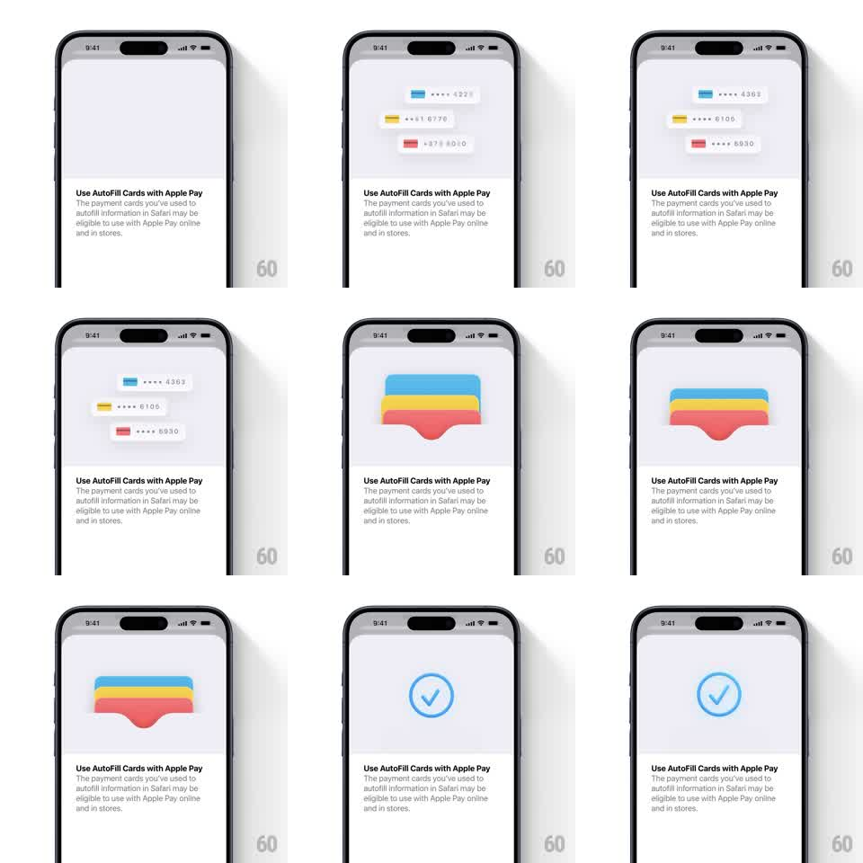

Media
Frame-by-frame

Rebuild this animation 1:1: Apple Wallet's AutoFill intro - three mini payment cards appear, stack together, morph into the colorful Wallet card-stack icon, then resolve into a blue checkmark.

Rebuild this animation 1:1: Apple Wallet's AutoFill intro - three mini payment cards appear, stack together, morph into the colorful Wallet card-stack icon, then resolve into a blue checkmark. ## Integration Integration: stack-agnostic spec - springs given as stiffness/damping, timed motions as duration + curve; map every value to your framework and animation library of choice. ## Scene Apple Wallet sheet, light grey: animation stage on top, "Use AutoFill Cards with Apple Pay" + explainer copy below. The stage plays: three small cards (blue •••• 4369, yellow •••• 6106, red •••• 6933), then a merged stack icon (blue/yellow/red rounded layers), then a blue ring with a checkmark. ## Motion spec Pattern: cards stack, morph into the Wallet icon, then resolve to a checkmark. - The three mini cards fade/slide in staggered (translateY 12 -> 0, 250ms each, 120ms apart) and hover slightly offset. - They converge into a vertical stack (translate to center, 350ms ease-in-out), overlapping with ~10px offsets - a neat deck. - The deck morphs: the three cards squash vertically and their shapes melt into the Wallet icon's layered silhouette (blue top, yellow middle, red bottom with the rounded tab cut) - a continuous shape interpolation over 400ms, colors preserved per layer. - The icon holds 500ms, then its layers collapse upward (scaleY -> 0.1, 250ms) as a blue ring draws on (stroke, 300ms) and the check draws inside it (stroke, 250ms, 100ms later). - The completed check does one soft pulse (scale 1 -> 1.08 -> 1, 300ms) and rests. ## Calibration - Layer colors stay pure Apple blue/yellow/red through the morph - no muddy in-betweens. - The number chips (•••• xxxx) on the mini cards fade out during the converge, before the melt. ## Reduced motion The three states crossfade (300ms each) without shape morphing. ## Don't miss - The melt is the signature move - cards must read as becoming the icon, not being replaced by it. - The check's ring and stroke draw in the same blue; the whole sequence loops back to the three cards after a 1s hold.